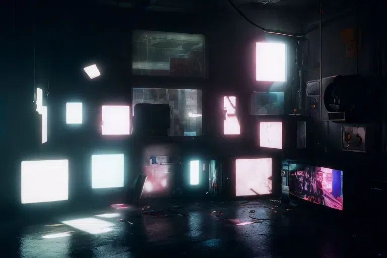

i have a faint memory that i have once spoken, or well written about ego on this blog before. i cannot recall fully as i once was able to... oh well. all signs and roads lead to me developing an ego, would that be a good thing? do i not already have one? or maybe this current shell i possess is merely that, a shell meant for protection. as i near 30, things are starting to fade, others are starting to take shape. im realizing many things and everything is redirecting into a single focus, a single future. HE; my future self, will be that which i have suffered for. may he adorn the knowledge, respect and love he so deserves. will i no longer be split amongst masks? will i be able to live...? no longer under the heel of the prosecutor whom without evidence nor proof, claims i am the most horrible person alive, that i have commited the most egregious sin; being alive. oh you, who made my reclusive years hell... may you know peace, internal. maybe these past 5 years of hell weren't a waste.. maybe i truly have grown and learned a great many things. anxiety? beaten. depression? reduced to boredom. bipolar? non-existent. oh how i wish for these years be the great trials and tribulations before my true, prime, years that are filled with joyous wonders and most importantly, life. 11 years of prison... all i had was a computer. i cant help but feel i wasted most of those years given i had the whole of human knowledge at my fingertips. why didnt i focus on learning? oh... right, i was constantly caught up in drama, drugs, abuse, neglect, rejection, and abandonment. its all a blur still. from those peaceful yet dangerous days (i was young and unaware of the danger, but i found it to be the most peaceful days of my life), to recently, it just feels like ive been on autopilot for so fucking long. and only now as i near 30 am i finally able to defend myself both physically and mentally, without losing control! no more masks, lies, pretending, splits, whatever, to protect myself / inner core. is this the true path to freedom? will i finally get to taste it? alone too that is. i dont know reader, i went on a bit of a rant, but it was a true coherent flow of thought! unlike previous, chaotic, posts i have made. i truly am making progress. what will the end of 2025 hold for me?
